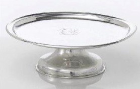

George Fielding
George Fielding was a New York silversmith who also lived in Albany during the middle decades of the eighteenth century.
He probably was born in New York about 1710. We seek particulars regarding his background and early life. However, in April 1729, he married Catharina Roseboom at the Albany Dutch church. Over the next twenty-five years, several of their children were christened at the Dutch church in New York City. In 1730, he was named co-executor of the letters of administration granted on the estate of Widow Deborah Fielding of New York City. Perhaps she was his mother.
 In 1731, he was admitted to the freemanship of New York City and identified as a "goldsmith." However, silver pieces such as the salver pictured here and dating from about that time have survived.
Beginning in 1756, his name began appearing regularly on Albany rolls. A census of householders taken by the British army called him "Mr. Fielding" and identified him as a silversmith. Subsequent Albany assessments taxed his second ward holdings at a modest rate. In 1765, he witnessed the will of one of his second ward neighbors.
George Fielding was last heard from in 1779. His widow's name was listed as the owner of a house in the second ward as late as 1788.